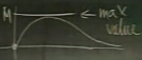

Ders 20
Konumuz Laplace Transformu ile diferansiyel denklem çözmek. Fakat onu yapmadan önce, Laplace Transformunun mümkün olduğundan emin olmamız gerekiyor. Bazılarınız düşünebilir, "ama hocam alttaki formül her zaman hesaplanaz mı?"
$$ F(s) = \int_0^{\infty} f(t)e^{-st} \mathrm{d} t $$
Cevap hayır çünkü üstteki bir uygunsuz (improper) entegral, üst sınır sonsuzluğa gidiyor ve bildiğimiz gibi uygunsuz entegraller her zaman bir değere yaklaşmıyorlar (converge).
Laplace tranformunun mümkün olmasının kontrolü, entegre edilen $f(t)$'nin "çok hızlı büyümemesi"yle alakalı. Fonksiyonun büyüyebilir tabii, ama çok hızlı büyürse o zaman $e^{-st}$ ile çarpılmak onu aşağı çekemez, ve entegralin tamamı bir değere yaklaşamaz. O zaman $f(t)$'nin olması gerektiği şartı "üstel tipte (exponential type)" olarak tarif edebiliriz. Yani
$$ |f(t)| \le C e^{kt}, \ \textit{ sabit } C > 0, \forall t \ge 0 \textit{ herhangi bir } k > 0 $$
$f(t)$'nin mutlak (absolute) değerini kullandık, fonksiyonun eksi yönde mi, artı yönde mi olduğu önemli değil, önemli olan büyüyüs (ya da küçülüs) hızı. Bu arada, üstteki tanımda bir sürü dehşet hızla büyüyen fonksiyon mümkün, mesela $e^{100t}$'yi düşünelim; bu fonksiyonun nasıl büyüdüğünü gören var mı? Roket gibi yukarı fırlar, o kadar hızlı bir büyümeden bahsediyoruz. Yani üstteki şart geniş bir yelpazedeki fonksiyonları kapsayabilir, çok kısıtlayıcı sayılmaz. Bazı örnekler görelim.
$\sin(t)$ üstel tipte midir? Evet, çünkü $|\sin(t)| \le 1$ daha doğrusu $|\sin(t)| \le 1 \cdot e^{0t}$.
Ya $t^n$? Bu fonksiyon da roket gibi yukarı fırlar ama acaba karşılaştırılacak üstel fonksiyonda $k$'yi yeterince büyük yaparsak onun üstesinden gelebilir miyiz? Şaşırtıcı gelebilir ama buna gerek yok, $k=1$ bu işi hallediyor.
$$ t^n \le M e^t, \ \textit{ M herhangi bir sabit }, \forall t > 0 $$
Yani bu üstel tıp bir fonksiyon. Bunun tabii ki böyle olacağını tahmin edebilirdik, geçen derste $t^n$'nin Laplace tranformunu hesapladık ne de olsa (Laplace tranformu yapabilmek teoride her zaman üstel tıp olması anlamına gelmiyor aslında, ama pratikte her zaman öyle), neyse, ama üstteki karşılaştırma nasıl işledi? Şu hesabı yapalım
$$ \frac{t^n}{e^t} $$
İddia ediyorum ki üstteki ifade bir $M$ sabiti ile "sınırlanmıştır (bounded by)", yani hep $M$'in altındadır. Kontrol etmek için yani
$$ \frac{t^n}{e^t} \le M$$
sorusunu kontrol ederiz. Ya da onunla direk ilgili bir soru $t \to \infty$ iken
$$ \frac{t^n}{e^t} \to ?$$
sorusunu. Üstteki bölüm sıfıra yaklaşır. Niye? Yine önceki dersten, L'Hospital Kuralı sebebiyle! Bölümün sıfıra gitmesi ne anlama gelir?

Bölüm sıfırda başlamıştır, ve sıfıra gider, ve sürekli bir fonksiyondur. Bu demektir ki arada bir yerde muhakkak bir maksimum değere (max value) sahiptir, bu noktaya $M$ dersek, bölüm $M$ tarafından sınırlandırılmıştır diyebiliriz.
Şimdi üstel tip "olmayan" iki tane fonksiyon görelim.
Mesela $1/t$ üstel tip değildir.
$$ \int_0^{\infty} e^{-st}\frac{1}{t} \mathrm{d} t $$
Entegralin sınırlarına bakalım, $t$ 0 yakında iken $e^{-st} \approx 1$. Geri kalan
$$ \int_0 \frac{\mathrm{d} t}{t} $$
ki üst sınırı belirtmedik, ne olursa olsun, bir noktaya yaklaşmaz, üstteki fonksiyon $ln(t)$ gibidir, $ln(0)=-\infty$ değeridir zaten. O zaman $1/t$ üstel tip değildir, ve $1/t$'nin Laplace tranformu yoktur.
Bir bakıma üstteki fonksiyon "ise doğru başlamadığı" için üstel tip olamamıştır, ta baştan sonsuzluk devreye girmiştir çünkü. Daha ilginç bir örnek aşırı hızlı büyüyen bir fonksiyon. Mesela
$$ e^{t^2} $$
Bu fonksiyon üstel tip olamayacak kadar hızlı büyür. Çünkü
$$ e^{t^2} > e^{kt} $$
$k$ ne kadar büyük olursa olsun üstteki ibare geçerlidir.
Çünkü sonsuza giderken $t^2 > kt$ olur, $t>k$'yi geçtikten sonra bu olacaktır, evet oraya gelinceye kadar bayağı beklemek gerekebilir, ama sonsuza giderken bu kesinlikle olur.
E o zaman $e^{t^2}$ içeren diferansiyel denklemleri nasıl çözeceğiz? Laplace ile değil ama başka bir şekilde. Nasıl bir yol takip etmeliyiz? Çözümü biz vermeyeceğiz, çünkü araştırmalarımızda öyle bir denklem hiç karşımıza çıkmıyor. Tabiat $\sin, \cos$, $e$ içeren üstel fonksiyonları sever, fizikte $e^{t^2}$ türünden hiçbir ifade görmedim, belki bu benim cahilliğimle alakalı [hoca alçakgönüllülük yapıyor].
Not: $e^{-t^2}$ başka bir hikaye. O y ekseninden aşağı, iki yana yayılan bir fonksiyon üretir.
Şimdi Laplace Tranform ile diferansiyel denklem çözmeye gelelim.
Laplace ile çözmek ve şimdiye kadar kullandığımız yöntemlerle çözmek arasında çok temel bazı farklılıklar var.
$$ y" + Ay' + By = h(t) $$
Şimdiye kadar gördüğümüz teknikler bu problemi bu haliyle çözerler. Ama Laplace tranformu bir başlangıç şart problemine (initial value problem) ihtiyaç duyar. Yani çözümden önce başlangıç şartını kesinlikle tanımlamanız gerekir.
Peki bu değerleri bilmiyorsam ne yaparım? O değerler için değişkenler atarız,
$$ y(0) = y_0, \ y'(0) = y_0' $$
ve böyle devam ederiz, çözümün içinde tabii ki $y_0,y_0'$ değerleri olacaktır. Yani bir anlamda başlangıç değerleri yoksa bile "varmış gibi" yapıyoruz, kıyasla diğer yöntemlerde varmış gibi yapmaya bile gerek yoktu. Kimisine göre bu büyük bir eksik sayılabilir belki, kimisi için de hiç önemli değildir. Biz ikinci bakış açısını bu derste takip edelim isterseniz.
Bir türevin Laplace Tranformunu nasıl yaparım? Bir türevin Laplace'i cebirsel bir fonksiyondur, yani kendisi türev olmayan, doğaüstü (transcendental) olmayan bir $Y(s)$ fonksiyonu.
$Y(s)$ elde edilince, onu cebirsel yöntemlerle çözeriz. Her cebirsel fonksiyon çözülebilir demiyoruz, ama Laplace'in bize sağladığı cebirsel fonksiyonlar çözülebilir olacaktır. $Y$ fonksiyonları polinomlar içerirler,
$$ Y = \frac{p(s)}{q(s)} $$
$Y$'yi elde edince ne yaparız? Bu çözümün Laplace tranformudur, onu alıp $\mathcal{L}^{-1}$ ile geriye gideriz ve aradığımız $y = y(t)$'yi buluruz.
ODE'den çözüme gitmek yerine ekstra Laplace basamağından geçmek, sonra geriye gitmek acaip gibi gelebilir, ama çoğu zaman ODE'den direk çözüme gitmek zor oluyor, fakat $Y(s)$'ten bir cebirsel çözüme ulaşmak kolay oluyor. Zaten tranformun kendisi de kolay. Tabii ters Laplace biraz zor, kısmı kesirler kullanılacak, tabloya bakılacak, vs.
Türevin Laplace Tranformuna gelelim,
$$ \mathcal{L}(f'(t)) $$
ifadesini nasıl tranform ederim? Girdi herhangi bir $f'$ olabileceğine göre, elde edilmesi umulabilecek en iyi sonuç, öğeleri temel fonksiyon $f$'i içeren bir şeyler olabilir. Başka bir şey bilmiyoruz.
$$ \mathcal{L}(f'(t)) = \int_0^{\infty} f'(t)e^{-st} \mathrm{d} t $$
Yani öyle bir işlem bulayım ki üstteki ifade $f'$ değil $f$ içersin, sonra oradan $f$'in Laplace tranformuna geçeyim.
Peki bu işlem, bu cinlik ne olabilir? $f'$ den kurtulmak istiyorsam, $e$'nin türevi önemli değilse ne yaparım? Parçalarla entegral (integration by parts) kullanırım.
Bu arada bu metot İleri Analiz alanındaki en önemli tekniktir, her türlü ilginç cinliğin temelinde bu metot yatar. Parçalarla entegral'in kendisi de türevlerde çarpım kuralının tersten okunuşundan başka bir şey değil bu arada.
$$ = e^{-st}f(t) \bigg]{0}^{\infty} - \int{0}^{\infty} -s e^{-st}f(t)\mathrm{d} t $$
Soldaki ilk parçanın değeri için bir limit hesabı lazım
$$ \lim_{t \to \infty} \frac{f(t)}{e^{st}} = 0, s>0 \textit{ eğer f(t) üstel tip ise } $$
İşte önceden bahsettiğimiz kavram yine karşımıza çıktı. Üstteki limit sadece $f$ üstel bir tip ise sıfıra gider.
$$ = 0 - f(0) + s \int_0^{\infty} f(t)e^{-st} \mathrm{d} t $$
Formüle $f(0)$ var, işte başlangıç değeri bunun için lazım, oraya $f(0)$ koyabileyim diye. Geriye tek bir entegral kaldı, o da $f$'in Laplace transformu!
$$= 0 - f(0) + s F(s) $$
$$= s F(s) - f(0) $$
İkinci Türev
$f"$ için ne yaparız? Yine parçalarla entegral akla gelebilir, fakat bu noktada, direk $f$ ile o zor. Ama
$$ f"(t) = [f'(t)]' $$
dersek, o zaman köşeli parantezin birinci türevi ile uğraşıyoruz demektir,
$$ = s \mathcal{L} (f'(t)) - f'(0)$$
$$ = s[sF(s) -f(0)] - f'(0)$$
$$ = s^2F(s) - sf(0) - f'(0)$$
$f(0),f'(0)$ problemin başlangıç değerleri, ki onlar bilinecek. Bazen problemde bunlar sıfır olur, ya da problem öyle düzenlenir ki onlar sıfır hale "getirilir", işler iyice kolaylaşır, vs.
Ornek
$$ y" - y = e^{-t}, \ y(0) = 1, y'(0)=0 $$
Bu problemi operatörler kullanarak çözmeyi biliyoruz. İki adım: önce sıfıra eşitleyip homojen denklemi çözeriz, karakteristik polinomu alırız, kökleri buluruz. Sonra özel çözümü buluruz, üstel cevap formülü (exponential response formülü) bir ara devreye girer, ve en sonunda başlangıç değerlerini yerine koyarız. Bayağı uzun bir işlem olur.
Bu çözüm Laplace ile çok daha kolay. Fonksiyonun transformuna $Y$ dersem, $y"$ transformu
$$ s^2Y - s - 0$$
geri kalanı
$$ s^2Y - s - Y = \frac{1}{s+1}$$
$Y$'yi yanlız bırakalım
$$ (s^2-1)Y = \frac{1}{s+1} + s $$
Eşitliğin sağ tarafındaki terimler birleştirilebilir, bunu yapmak bazen iyidir, bazen kötüdür, tecrübeye göre karar vermek gerekir.
$$ (s^2-1)Y = \frac{s^2+s+1}{s+1} $$
Biliyoruz ki
$$ s^2-1 = (s+1)(s-1) $$
O zaman
$$ Y = \frac{s^2+s+1}{(s+1)^2(s-1)} $$
Kismi kesirler
$$ = \frac{}{(s+1)^2} + \frac{}{s+1} + \frac{}{s-1} $$
Lisede bu tekniği görenleriniz olabilir, ve lisede üstteki gibi bir problemde ekstra bir $s+1$ böleni kullanmazlar genelde. Fakat üç kesir yerine iki kesir kullanırsanız, bölümde sabitler elde edemezsiniz.
Kesirleri elde etmek için "üzerini kapatma" yöntemi, defterde elimizi bir bölen üzerine koyarak onu kapatmaktan geliyor, $Y$'de $s-1$'in üzerini kapatıp $s=1$ deriz, $3/4$ çıkar. $(s+1)^2$'nin üzerini kapatalım, $s=-1$, sonuç $-1/2$.
Tek başına $s+1$ biraz daha ikircikli. Kare formülünü açarsak, $(s+1)(s+1)$, ve tek birini kapatırsak, diğeri tüm böleni sıfır yapar, kesirin alt kısmı sıfır olamaz, sonuç sonsuz olur. Başka bir teknik lazım.
Dert degil, bildiklerimizi yerine koyar, $s=0$ dersek,
$$ = \frac{-1/2}{(s+1)^2} + \frac{C}{s+1} + \frac{3/4}{s-1} $$
$$ -1 = -\frac{1}{2} + C - \frac{3}{4}$$
$$ C = \frac{1}{4} $$
$C$'yi yerine koyarsak
$$ ___ + \frac{1}{4}e^{-t} + \frac{3}{4}e^t $$
Kalan $___$ için böleni $(s+1)^2$ olan kesir gelecek.
$$ t \leadsto \frac{1}{s^2} $$
işe üstel kaydırma formülü ile
$$ te^{t} \leadsto \frac{1}{(s+1)^2} $$
başında $-1/2$ var
$$ -\frac{1}{2}te^t + \frac{1}{4}e^{-t} + \frac{3}{4}e^t $$
Bu arada eski metotla karşılaştırmak gerekirse parçalar
$$ \underbrace{-\frac{1}{2}te^t}{\textrm{özel çözüm}} + \underbrace{\frac{1}{4}e^{-t} + \frac{3}{4}e^t}{\textrm{tamamlayıcı, genel çözüm}} $$
olarak tekabül eder. Genel çözümde $c_1,c_2$'nin Laplace tarafından otomatik olarak hesaplandığını görüyoruz.